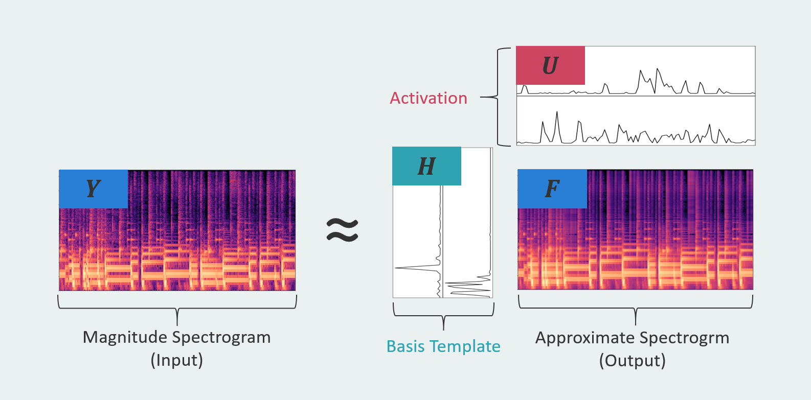
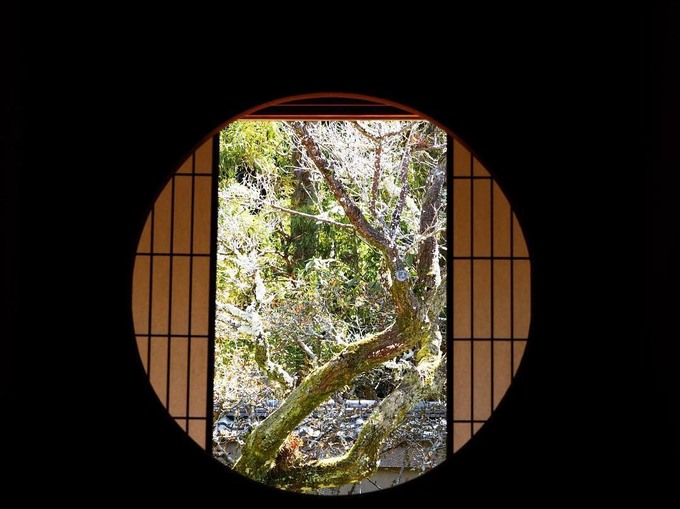
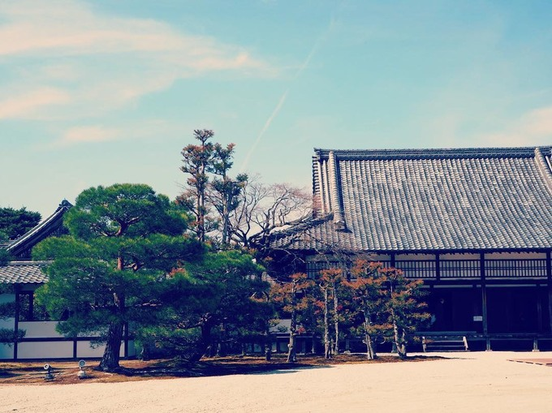
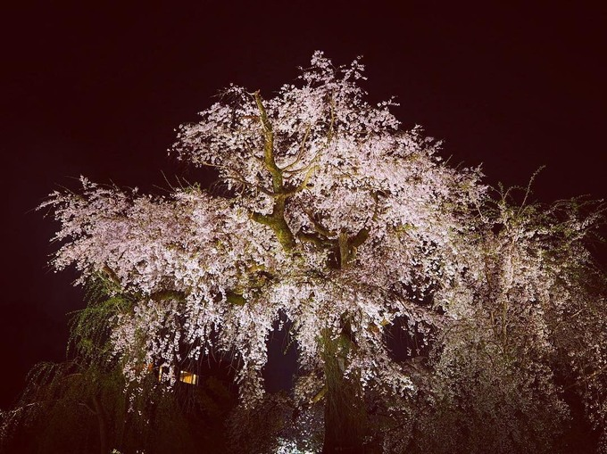
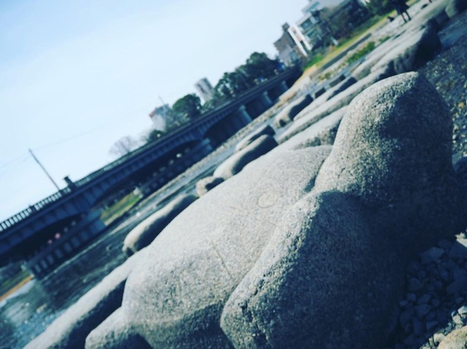
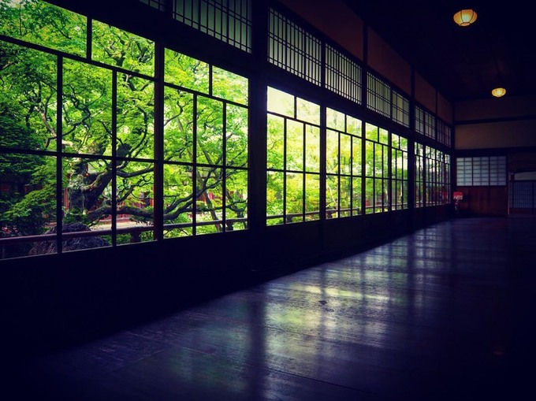
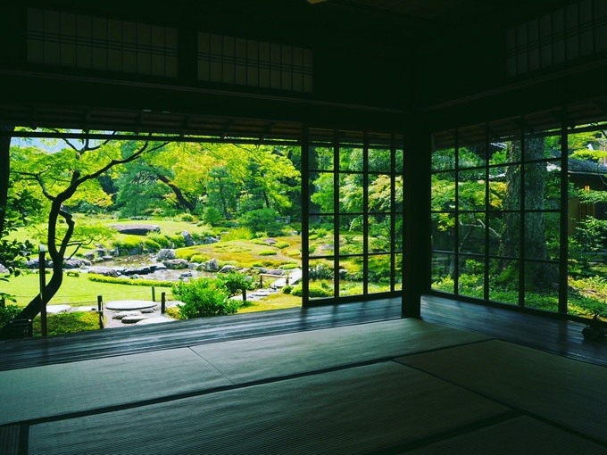
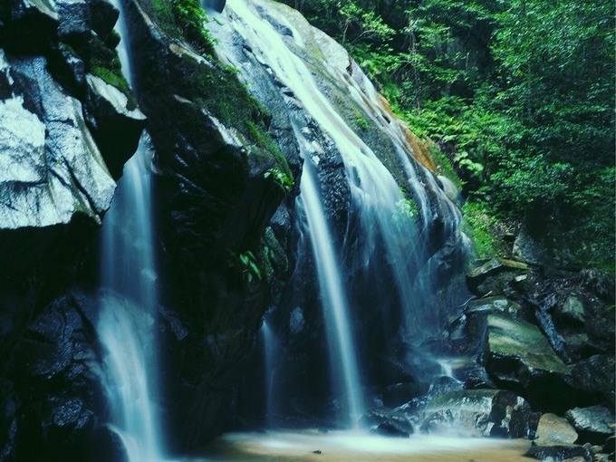
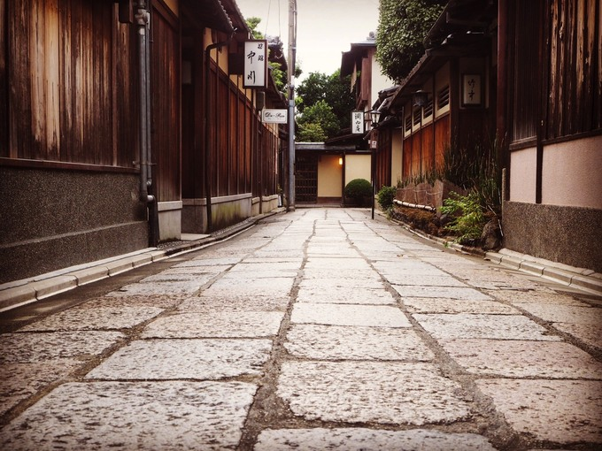
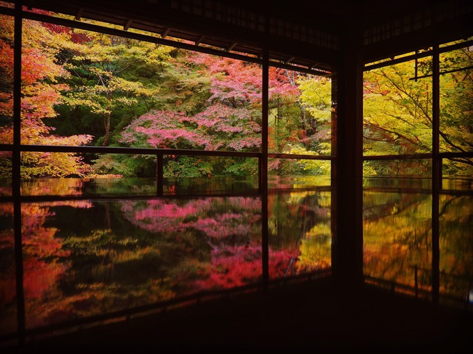

ABOUT

Hi, I'm zuka. I'm interested in Automatic Music Transcription. Also, trying to let musical patterns "humanization" through machine learning. I also like skiing, playing the piano, taking pictures and drinking strong coffee. Anyway, thank you for seeing my portfolio. In the following, I will introduce my background, research interests, worked projects, extracurricular activities, and other activities. In the end, I will show you some tips through beautiful pictures of Kyoto. If anything happens, please contact me through an e-mail or SNS.
BACKGROUND
Basic information is shown here.

Personal Data
- Name：Ryoto Ishizuka
- E-Mail (office)：ishizuka [at] sap.ist.i.kyoto-u.ac.jp
- E-Mail (private)：zuka.info.official [at] gmail.com
- Language：Japanese (Native level) / English (Business level)

Academic Background
- B.E. in Cognitive and Information Sciences at Kyoto University [Apr 2015 – Mar 2019]
- - Supervised by Prof.Hirohisa Hioki
- M.E. in Intelligence Science and Technology at Kyoto University [Apr 2019 –]
- - Supervised by Prof.Kazuyoshi Yoshii
Exchange Program
-
VNUK in Danang University, Vietnam [Sep 2018 – Dec 2018]
- - Belonged to International Business Management

Work Experience
- Nomura Research Institute, IT solution course for 5 days [Aug 2019]
- - Worked in Multi Cloud Integration Division
- Sony Corporation, R&D center Internship for 1 month [Aug 2019 – Sep 2019]
- - Worked in Speech Information Processing Technology Department
- Recruit Holdings, WOW INTERNSHIP for 5 days [Sep 2019]
- - Worked in Media & Solutions project

IT skills
- Basic Knowledge
- Fundamental Information Technology Engineer [May 2019]
- Programming skills
- Python
- C
- Java
RESEARCH INTERESTS
My research topic is shown here.

Domain：Music Information Retrieval
Description：
It has been a long time since artificial intelligence can "recognize" and "make" arts comparable to humans. We call this kind of process including these two approaches as Music Information Processing. In terms of music recognition, transcription is the main task while it is the most difficult problem. If we can achieve enough performance to transcribe scores from music, the system would be utilized for helping to musical practice or composition. On the other hand, music generation is also primarily researched in the context of making musics. However, it is hard to evaluate generated music due to the fact that there is no clear criterion for defining what is "good" music. Even now, and maybe in the future also, it depends on subjective evaluation experiments to judge generated music. In my work, music recognition and generation are collaborated and interact with each other within the framework as an acoustic model and language model. The former represents how good output is in the input feature while the latter show how good the output is in musical structure. These two models have not been investigated together for a long time although each part is rapidly developed. Therefore, it is really meaningful to integrate the acoustic model and language model, and it will bring on other perspectives in Music Information Processing.
Description：
It has been a long time since artificial intelligence can "recognize" and "make" arts comparable to humans. We call this kind of process including these two approaches as Music Information Processing. In terms of music recognition, transcription is the main task while it is the most difficult problem. If we can achieve enough performance to transcribe scores from music, the system would be utilized for helping to musical practice or composition. On the other hand, music generation is also primarily researched in the context of making musics. However, it is hard to evaluate generated music due to the fact that there is no clear criterion for defining what is "good" music. Even now, and maybe in the future also, it depends on subjective evaluation experiments to judge generated music. In my work, music recognition and generation are collaborated and interact with each other within the framework as an acoustic model and language model. The former represents how good output is in the input feature while the latter show how good the output is in musical structure. These two models have not been investigated together for a long time although each part is rapidly developed. Therefore, it is really meaningful to integrate the acoustic model and language model, and it will bring on other perspectives in Music Information Processing.

Domain：Machine Learning
Description：
Recently, the development of deep learning methods has great impacts on computer science. Especially in machine learning, lots of classical methods such as SVMs or k-means are replaced by Deep Neural Networks (DNNs). While we can achieve State-of-The-Art performance using DNNs, those models require an enormous number of appreciating datasets for the tasks. However, preparing datasets including hand-made annotations requires a lot of costs. Therefore, unsupervised learning or data augmentation has been actively researched these days. In the context of speech recognition or music information retrieval, the recursive structure is important for memorizing time-series data. At first, RNNs have developed for memorizing those kinds of data. Nevertheless, RNNs cannot be trained accurately and memorize long-term data. Therefore, LSTM (Long short-term memory) is suggested in order to solve the problem. In addition, many kinds of seq2seq models have been developed with LSTM. CTC (Connectionist Temporal Classification) or attention-based model is commonly used for connecting different kinds of sequences. Thanks to those models, methods for speech recognition and Music information retrieval have rapid progress, even surpass humans.
Description：
Recently, the development of deep learning methods has great impacts on computer science. Especially in machine learning, lots of classical methods such as SVMs or k-means are replaced by Deep Neural Networks (DNNs). While we can achieve State-of-The-Art performance using DNNs, those models require an enormous number of appreciating datasets for the tasks. However, preparing datasets including hand-made annotations requires a lot of costs. Therefore, unsupervised learning or data augmentation has been actively researched these days. In the context of speech recognition or music information retrieval, the recursive structure is important for memorizing time-series data. At first, RNNs have developed for memorizing those kinds of data. Nevertheless, RNNs cannot be trained accurately and memorize long-term data. Therefore, LSTM (Long short-term memory) is suggested in order to solve the problem. In addition, many kinds of seq2seq models have been developed with LSTM. CTC (Connectionist Temporal Classification) or attention-based model is commonly used for connecting different kinds of sequences. Thanks to those models, methods for speech recognition and Music information retrieval have rapid progress, even surpass humans.

Domain：Sound Source Separation
Description：
We talk to each other with various kinds of background noise. It is famous for people to perceive our name even when it is a noisy environment. This is called the "Cocktail-Party Effect". Similarly, music usually consists of many instruments like the piano, drum, and bass, etc. In those situations, sound source separation is used for recognizing desired objectives. Non-negative Matrix Factorization (NMF) is commonly used for sound source separation. This is due to the mathematical features of NMF: sparse and low rank. The separated component should be sparse. Also, especially in music, objectives are low rank because of the repeated structure. However, NMF has some problems like initial value dependence and performance. In order to tackle these matters, lots of derivative models are suggested. Recently, more and more researchers are using deep learning for sound source separation. Therefore, we need to prepare enough dataset for those tasks.
Description：
We talk to each other with various kinds of background noise. It is famous for people to perceive our name even when it is a noisy environment. This is called the "Cocktail-Party Effect". Similarly, music usually consists of many instruments like the piano, drum, and bass, etc. In those situations, sound source separation is used for recognizing desired objectives. Non-negative Matrix Factorization (NMF) is commonly used for sound source separation. This is due to the mathematical features of NMF: sparse and low rank. The separated component should be sparse. Also, especially in music, objectives are low rank because of the repeated structure. However, NMF has some problems like initial value dependence and performance. In order to tackle these matters, lots of derivative models are suggested. Recently, more and more researchers are using deep learning for sound source separation. Therefore, we need to prepare enough dataset for those tasks.

Domain：Data hiding
Description：
Data hiding is a process to hide data behind cover data. It is mainly divided into 2 types: Digital Watermarking and Steganography. We usually use watermarking to protect copyright or something like metadata including author, publisher and Release date, etc. It is crucial for modeling the watermarking system not to be perceived the watermarking by users. That is, the media embedded metadata is conceived to be important in Digital Watermarking. This is because we assume that watermarking is mainly used in the music market. On the other hand, steganography is utilized for hiding secret information into cover data. Therefore, it is required not to read the secret information. In that situation, we can read the secret information when we use a secret key that is used for embeddings. In order to protect the secret information from aggressors, we should construct a system where the aggressors cannot understand the information, even if they can perceive the information.
Description：
Data hiding is a process to hide data behind cover data. It is mainly divided into 2 types: Digital Watermarking and Steganography. We usually use watermarking to protect copyright or something like metadata including author, publisher and Release date, etc. It is crucial for modeling the watermarking system not to be perceived the watermarking by users. That is, the media embedded metadata is conceived to be important in Digital Watermarking. This is because we assume that watermarking is mainly used in the music market. On the other hand, steganography is utilized for hiding secret information into cover data. Therefore, it is required not to read the secret information. In that situation, we can read the secret information when we use a secret key that is used for embeddings. In order to protect the secret information from aggressors, we should construct a system where the aggressors cannot understand the information, even if they can perceive the information.
PROJECTS
The projects I worked in the past are listed below.


EXTRACURRICULAR
ACTIVITIES
What I have done in college student days.


Domain：Demo Ski
Description：
Both men and women won the championship in the Kansai region. This is the first-ever achievement in our history. I have been belonging to the demo ski team for 5 years and played the role of captain. We have over 50 members and our dream was to become the strongest team in 48 years history. In the end, we achieved the goal: we won the championship in the Kansai region and reached a podium in the national convention.
Achievement：
Description：
Both men and women won the championship in the Kansai region. This is the first-ever achievement in our history. I have been belonging to the demo ski team for 5 years and played the role of captain. We have over 50 members and our dream was to become the strongest team in 48 years history. In the end, we achieved the goal: we won the championship in the Kansai region and reached a podium in the national convention.
Achievement：
Prize test
- Technical at Tsugaike [Feb 2017]
- Crown at Goryu [Mar 2017]
Summer ski student convention
- 1st place (individual) [Aug 2017]
- 6th place (team) [Aug 2017]
International Iwatake ski student convention
- 35th place (individual) [Feb 2019]
- 5th place (men-team) [Feb 2019]
Ski student convention in Kansai region
- 1st place (individual) [Mar 2018]
- 1st place (men-team) [Mar 2018]
International ski convention in Kyoto (preliminary)
- 5th place (individual) [Jan 2019]

Domain：Web medium
Description：
I have managed some web medium for my academic output or individual branding. "Beginaid" is the main media and over 20000 people visit this web media every month. This title is made of two words: "Beginners" and "Band-aid". At first, I wanted to help lonely beginners on the Internet. That is, there is much information on the Internet while the information lacks a source of a quote or "reshape" the original information for their sake. On the other hand, in some cases, we cannot find the data we want to get. In other words, beginners are poor at solving their problems on the Internet because of the lack of plenty or information on the Web site. In order to help those beginners: to let them the strongest band-aid, I write accurate and unique articles. This media has over 650 articles which are all made by my work. Further information is shown here.
Description：
I have managed some web medium for my academic output or individual branding. "Beginaid" is the main media and over 20000 people visit this web media every month. This title is made of two words: "Beginners" and "Band-aid". At first, I wanted to help lonely beginners on the Internet. That is, there is much information on the Internet while the information lacks a source of a quote or "reshape" the original information for their sake. On the other hand, in some cases, we cannot find the data we want to get. In other words, beginners are poor at solving their problems on the Internet because of the lack of plenty or information on the Web site. In order to help those beginners: to let them the strongest band-aid, I write accurate and unique articles. This media has over 650 articles which are all made by my work. Further information is shown here.
Domain：Cram school
Description：
I have worked at a cram school for 4 years. This is because my dream was to be a teacher. Through studying, I wanted to let students know how fun to know gain knowledge and how important to be independent in all areas of life. Along with this policy, we managed the cram school to be a "3rd place" for students. The 1st place is certainly family. Then the 2nd place in school. Generally speaking, we have these two places in my childhood. However, in some cases, it is not enough to gratify their curiosity or let children get independency. Therefore, our cram school seeks to become a 3rd place which is neither family nor school. We should play a role in what the two places cannot do.
Description：
I have worked at a cram school for 4 years. This is because my dream was to be a teacher. Through studying, I wanted to let students know how fun to know gain knowledge and how important to be independent in all areas of life. Along with this policy, we managed the cram school to be a "3rd place" for students. The 1st place is certainly family. Then the 2nd place in school. Generally speaking, we have these two places in my childhood. However, in some cases, it is not enough to gratify their curiosity or let children get independency. Therefore, our cram school seeks to become a 3rd place which is neither family nor school. We should play a role in what the two places cannot do.

Domain：Exchange program in Vietnam
Description：
I went to DaNang (Vietnam) for 4 months as an exchange student. I belonged to the International Business Management course and learned how developing countries like Vietnam should go along with developed countries. There are various kinds of classes such as "Leadership", "Cross-cultural management" and "Contemporary Issues of International Business". In those classes, I had learned about what is leadership, what brings us a "good" leader, how should we construct relationships among leaders and members, what is culture, what is the difference between capitalism and socialism, how can we use design thinking in the context of business, and how is the difference between emerging countries and developed countries. Also, I had a really important experience there. Actually, I went to DaNang for the first time from Kyoto University. Therefore, I had a hard time living there. Then, many friends helped me to spend time in DaNang and even took me to enjoy sightseeing. At first, I couldn’t understand why they welcomed me so much. I was just one exchange student from Japan. I wondered they didn’t have to devote so much time to hang out with me. However, the more I knew about Vietnam, the more I got it. That is, all Vietnamese think plenty of families. In the same way, they welcomed me so much. I feel as if I were a member of your families. Really honored about it.
Description：
I went to DaNang (Vietnam) for 4 months as an exchange student. I belonged to the International Business Management course and learned how developing countries like Vietnam should go along with developed countries. There are various kinds of classes such as "Leadership", "Cross-cultural management" and "Contemporary Issues of International Business". In those classes, I had learned about what is leadership, what brings us a "good" leader, how should we construct relationships among leaders and members, what is culture, what is the difference between capitalism and socialism, how can we use design thinking in the context of business, and how is the difference between emerging countries and developed countries. Also, I had a really important experience there. Actually, I went to DaNang for the first time from Kyoto University. Therefore, I had a hard time living there. Then, many friends helped me to spend time in DaNang and even took me to enjoy sightseeing. At first, I couldn’t understand why they welcomed me so much. I was just one exchange student from Japan. I wondered they didn’t have to devote so much time to hang out with me. However, the more I knew about Vietnam, the more I got it. That is, all Vietnamese think plenty of families. In the same way, they welcomed me so much. I feel as if I were a member of your families. Really honored about it.


{kind=link}
{kind=link}
{kind=link}
{kind=link}
{kind=link}
{kind=link}
{kind=link}
{kind=link}
{kind=link}
GALLERY
I will show you some beautiful pics of Kyoto.
This is extra contents.
This is extra contents.

Ginkaku-temple
Japanese spirits.

Kinkaku-temple
The most famous one.
{kind=link}

{kind=link}
Unryu-in
Japanese traditional round window.

{kind=link}
Ninna-ji
Feel like living after retirement.
{kind=link}
{kind=link}
{kind=link}

Hushimi-inari
Like black hole.

Tokunari-bridge
Sakura with sunrise.

{kind=link}
Maruyama-park
The famous weeping cherry.

{kind=link}
Kamogawa-delta
Turtle Stone.
{kind=link}
{kind=link}

{kind=link}
Eikando
A scenery behind us.
{kind=link}

Honen-in
Near Ginkaku-temple.

{kind=link}
Murin-an
Only locals know.

Gion-festival
In front of Yasaka-shrine.

Amano-hashidate
It depends on the weather.

{kind=link}
kanabiki-waterfall
Most famous one in Kyoto.

{kind=link}
Ishibei-street
A secret spot.

Yasaka-tower
My favorite spot.

{kind=link}
Ruriko-in
Good to see autumen leaves.
{kind=link}
CONTACT
Please do not hesitate to contact me.
Mail(office):ishizuka[at]sap.ist.i.kyoto-u.ac.jp
Mail(private):zuka.info.official[at]gmail.com